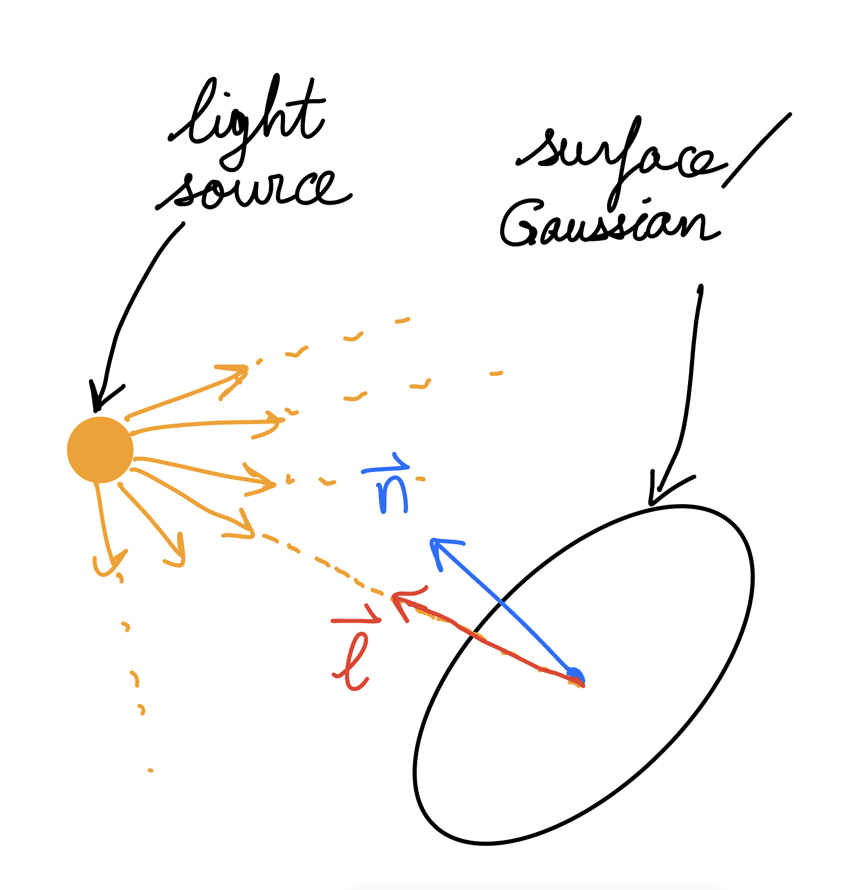
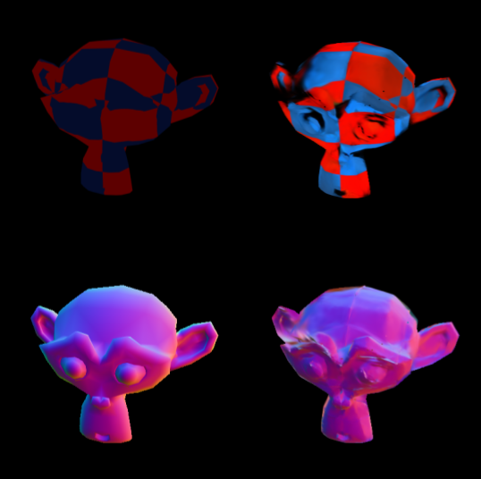
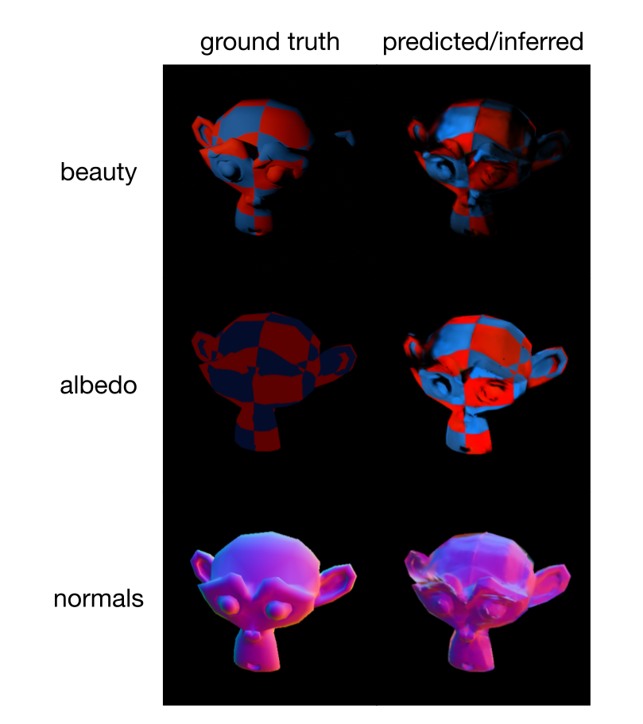

Relightable 3D Gaussian Splatting



In this project, I modified a 3D Gaussian Splatting (3DGS) pipeline to infer albedo and normals, thus allowing for rendering views under novel lighting conditions by applying a Lambertian reflectance model. I also created a custom dataset (checkered_suzanne) consisting of 400 training images and 30 test images, which I used to test and validate pipeline.
Background on Inverse Rendering and 3D Gaussian Splatting
The goal of inverse rendering is to recover properties (structure, geometry, colour, materia properties, etc.) from a scene/object based on images of the scene. Forward rendering may produces a set of 2D images based on a 3D model, whereas inverse rendering produces a 3D model based on 2D images. Once we have a 3D model, it then allows us to use forward rendering to obtain images of novel views of the scene (views that weren't initially given).
One way of representing 3D scenes/objects is 3D Gaussian Splatting, which uses a collection of different coloured Gaussians to approximate the structure and colour of the scene/object.
Here is the equation of a 3D Gaussian, which gives the opacity at position \( \mathbf x \in \mathbb R^3\):
$$ G(\mathbf{x}) = \alpha \exp\left(-\frac{1}{2} (\mathbf{x} - {\mu})^T \Sigma^{-1} (\mathbf{x} - {\mu})\right), $$where \(\alpha \in \mathbb R\) is the overall opacity parameter, \(\mu \in \mathbb R^3\) is the "mean" (most opaque part of the Gaussian) and \(\Sigma \in \mathbb R^{3\times 3}\) is the covariance matrix (describing the stretch and rotation of the shape). \(\Sigma\) can be factored into a scaling matrix \(S = \text{diag}(s_x, s_y, s_z)\) and a rotation matrix \(R\) (parametrized by a quaternion \(q = q_w + q_x i + q_y j + q_z k\) which encodes the same rotation information as \(R\)). In addition, each Gaussian is assigned a colour \(c = (r, g, b)\).
A collection of many of such Gaussians are combined to create a 3D model of an object or scene. An alpha-blending formula can then be used to render a view of the scene, based on the parameters of all the Gaussians in the scene.
In order to recover a 3D Gaussian model of a scene based on a set of images from different views, the following approach is used:
- Initialize the trainable parameters for a certain number of Gaussians: \(\alpha, \mu, (q_w, q_x, q_y, q_z), (s_x, s_y, s_z) \).
- Use the current model to render a prediction of a view from the training set.
- Calculate the loss based on the prediction render versus ground truth image. Then backpropagate and update the parameters.
- Repeat steps 2 and 3 as many times as necessary to obtain a satisfactory 3D Gaussian model.
Reflectance Model and Relighting
For standard 3DGS, $$ I_C = \frac {k \rho_C} {d^2} \max(0, \mathbf n \cdot \mathbf l) $$ $$q = q_w + q_x i + q_y j + q_z k$$ $$ R = \begin{bmatrix} 1-2(q_y^2+q_z^2) & 2(q_xq_y-q_wq_z) & 2(q_xq_z+q_wq_y)\\ 2(q_xq_y+q_wq_z) & 1-2(q_x^2+q_z^2) & 2(q_yq_z-q_wq_x)\\ 2(q_xq_z-q_wq_y) & 2(q_yq_z+q_wq_x) & 1-2(q_x^2+q_y^2) \end{bmatrix} $$Dataset and Training
$$ \mathcal L = \beta \mathcal L^1 + (1-\beta) \mathcal L_\mathrm{SSIM}$$where \( \mathcal L_\mathrm{SSIM}=1-\mathrm{SSIM} \) and \(\beta = 0.8\).
Results

Average metrics over 30 views:
| Metric | Value |
|---|---|
| Avg. beauty PSNR (full frame) | 32.53 dB |
| Avg. albedo L1 error (background masked) | 0.6821 |
| Avg. normal angular error (background masked) | 21.74° |